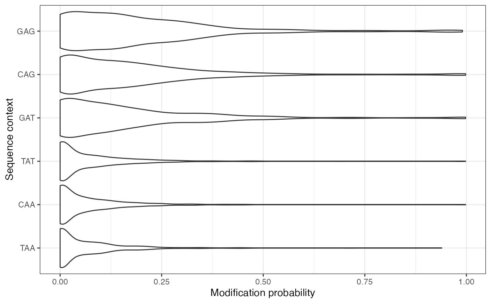
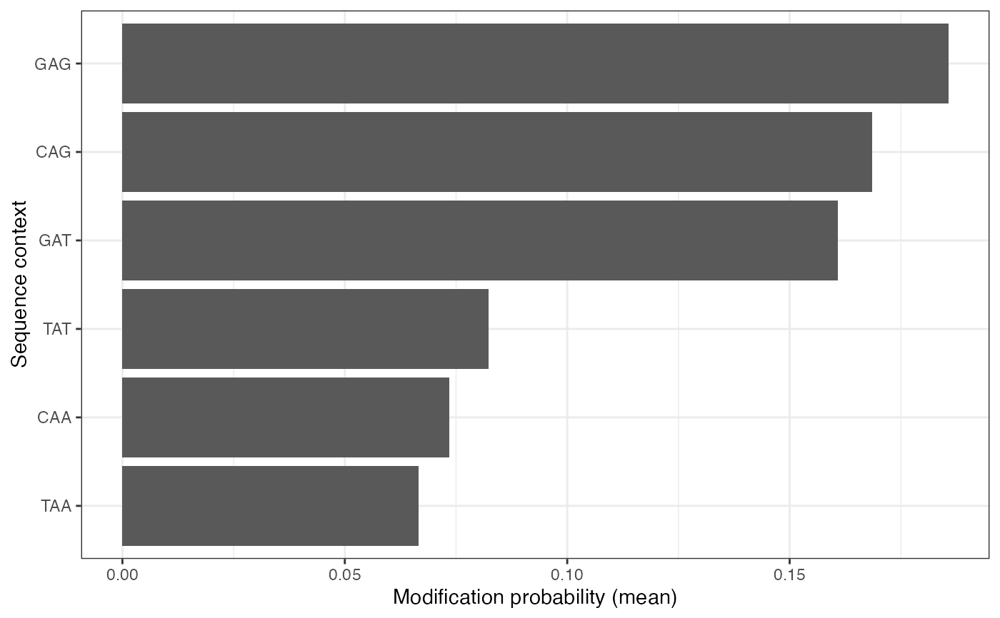
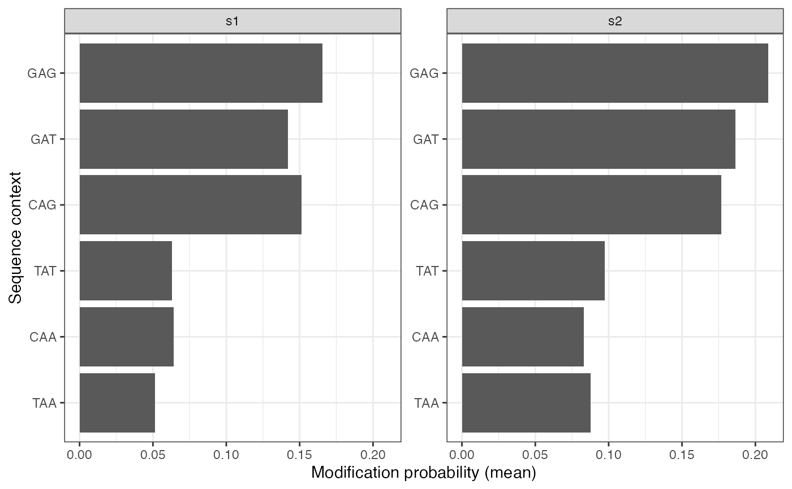

Plot assay values stratified by sequence context
Source:R/plotValsBySeqContext.R
plotValsBySeqContext.RdPlot assay values stratified by sequence context
Usage
plotValsBySeqContext(
se,
seqContextColumn = "sequenceContext",
assayName = "mod_prob",
aggregation = "mean",
selectContextsBy = "sample_union",
facetBy = NULL,
plotType = "violin",
topN = 10,
bottomN = 10,
flipCoord = TRUE,
yAxisLabel = "Modification probability"
)Arguments
- se
SummarizedExperimentobject with read-level footprinting data. Rows should correspond to positions and columns to samples.- seqContextColumn
Character scalar indicating which column of
rowData(se)contains the sequence context.- assayName
Character scalar indicating from which read-level assay the values to plot should be extracted.
- aggregation
Character scalar indicating if/how to aggregate values across (samples and) reads before plotting. Must be one of "none" (no aggregation, individual values from the assay are plotted) and "mean" (calculate average value for each position before plotting).
- selectContextsBy
Character scalar indicating how to select and order the contexts to show in the plot. Should be one of
"sample"(in which case the selection of sequence contexts will be done independently for each sample, and only the ones selected for a given sample will be displayed in the plot panel for that sample; in this casefacetBymust be"sample"),"sample_union"( in which case the selection of sequence contexts will be done for each sample, and the union of all selected contexts will be shown in the plot) or"overall"(in which case the selection of sequence contexts will be made without considering the sample information). Note that for"sample_union", the plots may contain more thantopN + bottomNcontexts. For"sample_union"and"overall", the order of the contexts in the plots will be determined by the average value across samples).- facetBy
Character scalar indicating how to facet values in the plot. Must be either
NULL(in which case no facetting is done, and values are aggregated across all samples inse) or"sample"(in which case values are aggregated within each sample, and plots are facetted accordingly).- plotType
Character scalar indicating what type of plot to create. Should be one of
"violin"(note that the violins will be plotted withscale="width"),"bar"and"errorbar".- topN, bottomN
Numeric scalars determining the number of sequence contexts to include in the plot. The
topNcontexts with the highest average values and thebottomNcontexts with the lowest average values will be displayed. IffacetBy = "sample", the selection of contexts to show is performed separately within each sample.- flipCoord
Logical scalar indicating whether the plot axes should be flipped (to display sequence contexts on the y-axis and values on the x-axis) or not.
- yAxisLabel
Character scalar providing the label to display on the value axis.
Examples
modbamfile <- system.file("extdata", c("6mA_1_10reads.bam", "6mA_2_10reads.bam"),
package = "footprintR")
ref <- Biostrings::readDNAStringSet(system.file("extdata", "reference.fa.gz",
package = "footprintR"))
se <- readModBam(bamfiles = modbamfile, regions = "chr1", modbase = "a",
BPPARAM = BiocParallel::SerialParam())
se <- addSeqContext(se, sequenceContextWidth = 3, sequenceReference = ref)
se <- filterPositions(se, filters = "sequenceContext", sequenceContext = "NAN")
plotValsBySeqContext(se, assayName = "mod_prob", plotType = "violin",
topN = 3, bottomN = 3)

plotValsBySeqContext(se, assayName = "mod_prob", plotType = "bar",
topN = 3, bottomN = 3)

plotValsBySeqContext(se, assayName = "mod_prob", plotType = "bar",
topN = 3, bottomN = 3, facetBy = "sample")
